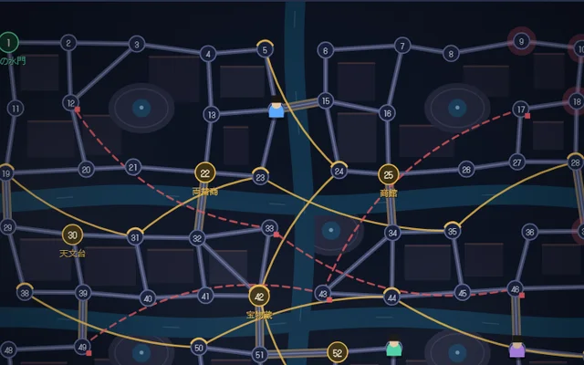
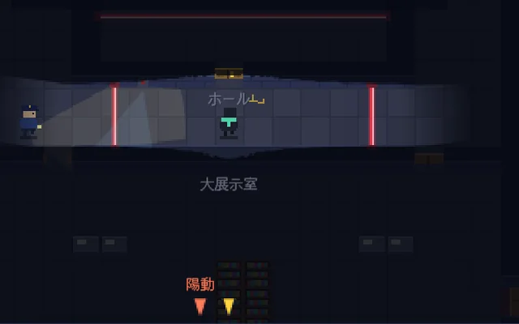
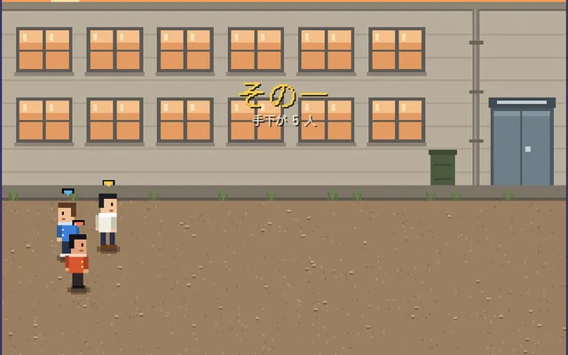
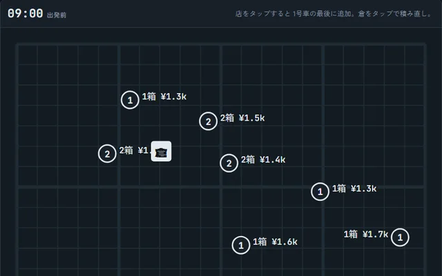

ブラウザでそのまま遊べる自作のミニゲームです。インストールはいりません。「ネットで」と書いてあるものは、招待リンクを送れば友達と一緒に遊べます。

姿の見えない怪盗を、使った乗り物の記録と時々の目撃から、探偵たちが相談して追い詰める。怪盗は宝を盗んで町の外へ。霧の港町・雪の温泉町・運河の町の 3 つの地図。

陽動・鍵開け・ハッカーの 3 人組で、見張りの目をかいくぐって金庫を破る。赤外線やきしむ床、金庫の番号は、それぞれの画面にしか見えない。声をかけ合って進む。全 3 ステージ。

くにおくん風の喧嘩アクション。3 人で手下と番長を倒す「番長戦」と、クロスカントリーや勝ち抜き格闘など 4 種目を競う「大運動会」。

トラックの配達の順番を組んで、燃料と人件費をおさえて利益を出す配送パズル。全 9 ステージ。AI 配車係の記録に挑む。